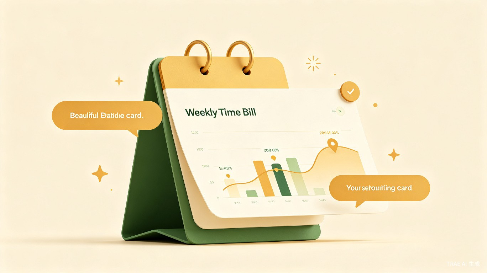
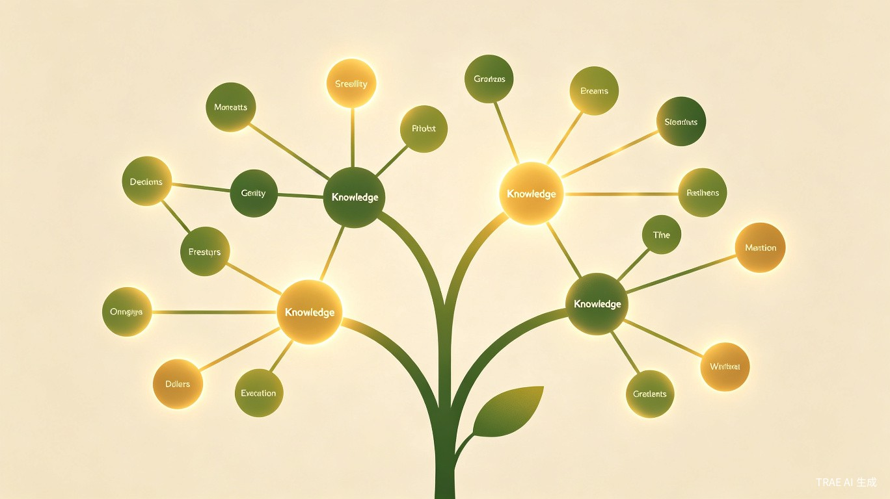

你只管记录，我温柔接着。
回头看，每一步都算数。
我们每天都在学习、记录、思考，却常常感到时间和努力在指缝间悄悄溜走。
一周过去，回头看却不知道自己到底做了什么。
时间像水一样流走，没有留下痕迹。
传统笔记需要手动分类、整理、打标签。
记录本身变成了负担，还没开始学就已经累了。
翻看历史记录，只看到零散的碎片。
一周、一月过去，这些忙碌是否沉淀为了成长？
效率工具追求极致理性，却缺乏温度。
它们记录"做了什么"，却从不关心"这一切是否值得"。
帮你把每一次记录变成有意义的成长节点
自动编织你的成长网络
温柔记录你走过的每一步
粘贴任意内容 -- 会议纪要、工作总结、学习笔记、项目复盘 -- 秒级生成结构化知识卡片，零门槛记录。
原始内容完整保留，同时生成结构化摘要卡片。既能快速回顾，又能深入查阅，两全其美。
每条记录自动成为成长节点，系统识别关联并建立连接。你的经历不再是孤岛，而是一张不断生长的网络。
每周、每月自动生成时光回顾，可视化展示你的成长轨迹和成长节奏。时光流向何处，一目了然。
不仅理性分析你的状态，更给予情感上的鼓励和陪伴。成长路上，有人懂你的每一步。
无需手动整理，粘贴任何内容，系统自动生成结构化知识卡片。
信息按层次组织，浏览效率与查阅深度兼得。
时间线视图下，每条记录以标题 + 标签 + 一句话摘要呈现，快速浏览一周的成长脉络。
展开卡片，看到系统生成的结构化摘要：核心概念、关键要点、关联标签，建立知识骨架。
一键展开原始内容，回到记录时的完整语境。不丢失任何细节，随时深入回顾。
每周自动生成可视化时光回顾，让每一分努力都有迹可循。

自动追踪成长路径，将散落的记录串联成清晰的成长轨迹。

成长印记会根据你的状态，给出有温度的回应。
不同身份，不同场景，同样的成长体验。
每天接触大量行业报告和竞品信息。以前看完就忘，现在一键粘贴到成长印记，系统自动提取要点并关联之前的记录。季度汇报时，知识脉络清晰呈现，领导夸他思路越来越系统。
热爱阅读和写作，但读书笔记散落各处。成长印记帮她把每本书的感悟自动整理，还能发现不同书籍之间的隐藏关联。期末写论文时，素材随手可得，文思泉涌。
学习摄影后期、色彩搭配、构图技巧，知识面广且杂。成长印记自动把他的学习记录串联成技能树，从摄影小白到能接商单，每一步成长都看得见。
三层架构各司其职，让产品体验流畅、智能、可靠。
从核心功能到生态扩展，成长印记将持续进化。
实现极速捕获、知识卡片生成、三层信息架构和基础时光回顾。聚焦核心体验，打磨记录到回顾的完整闭环。
上线知识图谱可视化、自动演进路线追踪、温暖回应系统。支持多端同步，引入协作功能，让知识连接更多人。
开放 API 和插件系统，接入更多数据源。通过 Git 提交记录、飞书文档、Notion 笔记等开放接口自动采集成长痕迹，让成长印记成为你所有知识活动的统一入口。